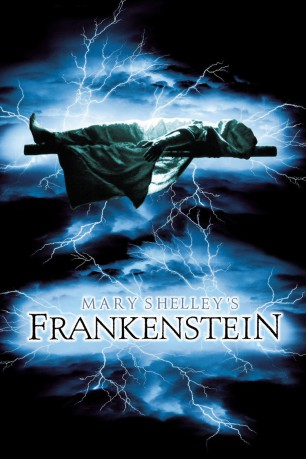

#6090 Mary Shelleys Frankenstein
Alternativ: Mary Shelley's Frankenstein
Auszeichnungen: für 1 Oscars nominiert
 
 IMDB-Wertung: 6.4 / 10
IMDB-Wertung: 6.4 / 10  Metascore: 0
Metascore: 0 
Victor Frankenstein ist nicht verrückt - er ist besessen! Über seinen Freund Henry lernt er den obskuren Professor Waldman kennen. Seitdem treibt Frankenstein nur noch eins: die Idee von der Erschaffung des künstlichen Menschen. Eines Nachts glückt das Experiment.
Jahr: 1994
Dauer: 123 Minuten
FSK: 16
Land: USA Studio: TriStar PicturesTonspuren: DTS - ,
Untertitel: Deutsch,
Auflösung: 1080p (1920x1040) Größe: 7987 MB
Genre: Horror, Drama, Sci-Fi, Liebe
Regisseur:  Kenneth Branagh
Kenneth Branagh
Drehbuch: Mark H. Baker
Soundtrack:
Darsteller:
 Robert De Niro als The Creature
Robert De Niro als The Creature Kenneth Branagh als Victor Frankenstein
Kenneth Branagh als Victor Frankenstein Tom Hulce als Henry Clerval
Tom Hulce als Henry Clerval Helena Bonham Carter als Elizabeth
Helena Bonham Carter als Elizabeth Aidan Quinn als Captain Robert Walton
Aidan Quinn als Captain Robert Walton Ian Holm als Baron Frankenstein
Ian Holm als Baron Frankenstein Richard Briers als Grandfather
Richard Briers als Grandfather John Cleese als Professor Waldman
John Cleese als Professor Waldman Robert Hardy als Professor Krempe
Robert Hardy als Professor Krempe- Cherie Lunghi als Caroline Beaufort Frankenstein
 Celia Imrie als Mrs. Moritz
Celia Imrie als Mrs. Moritz- Trevyn McDowell als Justine
- Richard Clifford als Minister
- George Asprey als Policeman
 Hugh Bonneville als Schiller
Hugh Bonneville als Schiller- Ryan J-W Smith als William
- Shaun Prendergast als Ship's Crew #2
 David Kennedy als Ship's Crew #4
David Kennedy als Ship's Crew #4- Paul Gregory als Ship's Crew #5
 Jenny Galloway als Vendor's Wife
Jenny Galloway als Vendor's Wife- Edward Jewesbury als City Official
- Siobhan Redmond als Midwife
 Angus Wright als Guard
Angus Wright als Guard Jim Carter als Executioner , uncredited
Jim Carter als Executioner , uncredited Patrick Doyle als Ballroom Orchestra Conductor , uncredited
Patrick Doyle als Ballroom Orchestra Conductor , uncredited- Stuart Hazeldine als Man in crowd scene , uncredited
- Kevin Hudson als Choir Boy , uncredited
 Gerard Horan als Claude
Gerard Horan als Claude- Mark Hadfield als Felix
- Joanna Roth als Marie
- Sasha Hanau als Maggie
- Joseph England als Thomas
- Alfred Bell als Landlord
- Charles Wyn-Davies als Young William
- Rory Jennings als Young Victor
- Christina Cuttall als Young Justine
 Hannah Taylor Gordon als Young Elizabeth
Hannah Taylor Gordon als Young Elizabeth- Susan Field als Frau Brach
 Jimmy Yuill als Grigori
Jimmy Yuill als Grigori- Chris Barnes als Ship's Crew #1
- Tommy Wright als Ship's Crew #3
- Chris Hollis als Ship's Crew #6
- Robin Lloyd als Ship's Crew #7
- Alex Lowe als Ship's Crew #8
- Graham Loughridge als Ship's Crew #9
- Simon Cox als Ship's Crew #10
- Robert Hines als Ship's Crew #11
- Lonnie James als Rough Woman
- Peter Jonfield als Rough Man
- Francine Morgan als Assistant Midwife
Datei: X:\1994\Mary Shelleys Frankenstein (1994, FSK16, 1920x1040).mkv seit 28.04.2017
Festplatte: HD 1992-1995
 Es gibt insgesamt 67 Filme in der Gruppe '1994'
Es gibt insgesamt 67 Filme in der Gruppe '1994'